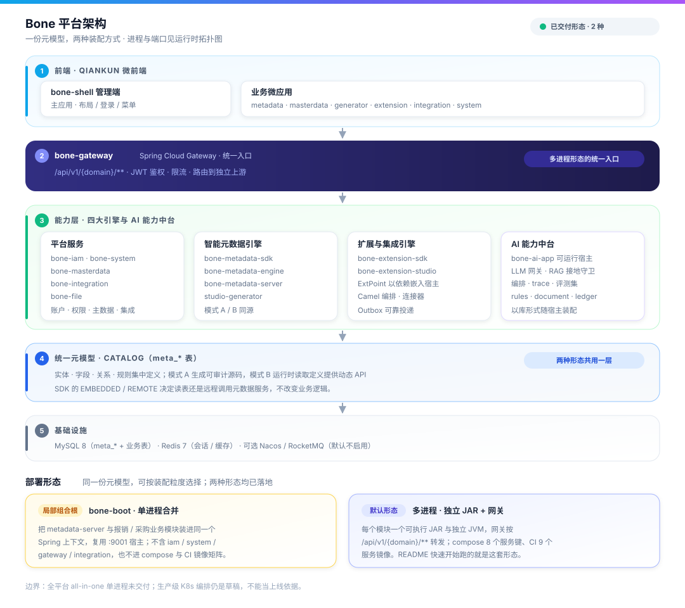
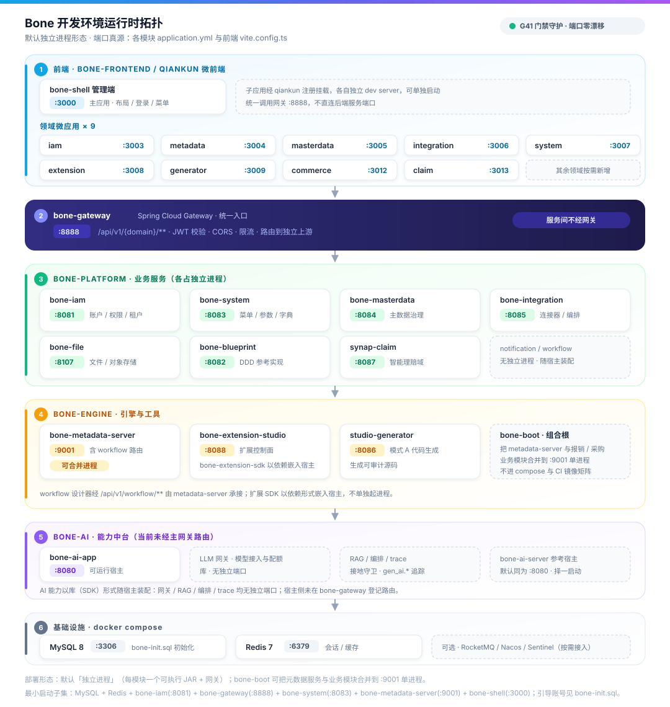

Bone 架构与部署图
先看平台分层与两种装配方式，再看本地开发环境实际起的进程与端口。端口真源是各模块 application.yml 与前端 vite.config.ts。
平台架构与部署形态
统一元模型贯穿模式 A / B；底部对比已交付的合并进程与独立进程两种形态。本图不标端口。

开发环境运行时拓扑
默认独立进程形态；bone-boot 组合根可把元数据服务与业务模块合并到 :9001 单进程。G41 门禁守护端口一致性。

先看平台分层与两种装配方式，再看本地开发环境实际起的进程与端口。端口真源是各模块 application.yml 与前端 vite.config.ts。
统一元模型贯穿模式 A / B；底部对比已交付的合并进程与独立进程两种形态。本图不标端口。

默认独立进程形态；bone-boot 组合根可把元数据服务与业务模块合并到 :9001 单进程。G41 门禁守护端口一致性。
